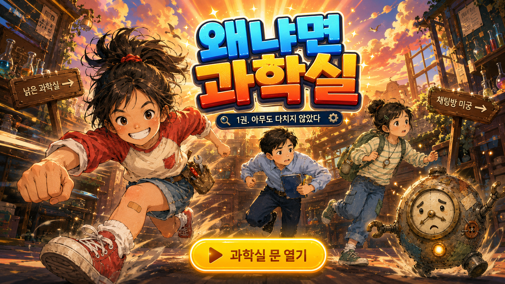

왜냐면 과학실
관찰 도구를 확인하는 중…

기획·제작: 김종훈
왜냐면 과학실 시리즈 · 짐작 대신 확인하는 모험
함께 관찰할 친구를 골라요
누구로 시작할까요?
카드를 누르면 그 친구의 특기를 볼 수 있어요.
월드 선택
잠시 후 시작합니다…
아무 키나 눌러 시작
낡은 과학실
★점수 0
기억 0
↓
스테이지 클리어!
아무도 다치지 않았습니다
모은 확인 카드
가로로 돌리면 더 넓게 보여요